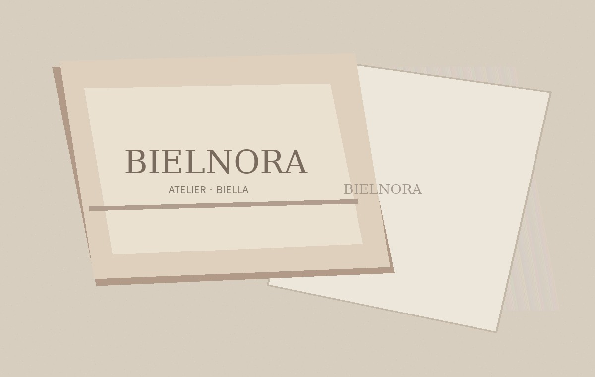

SERVICES / CONCIERGE
Care beyond seasons.
완성된 옷은 오래 입을수록 더 많은 이야기를 담습니다. 오랜 관계를 생각하는 서비스 설계.

WHITE GLOVE EXPERIENCE
A considered
arrival.
전용 패키지, 린넨 커버, 의류 보호 포장 등 프리미엄 배송을 위한 서비스 컨셉. 실제 무료 배송과 도착 시간은 확정된 운영 정책이 아닙니다.
OUR SERVICE PRINCIPLES
A lifetime of intention.
01. Restoration
단추 및 스티치 점검, 전문 수선 연결을 검토하는 케어 프로그램 구상.
02. Preservation
비시즌 코트를 위한 온습도 관리 보관 프로그램 구상. 현재 미운영.
03. Discretion
전용 가먼트백, 패키지, 사전 예약 배송 컨시어지 구상. 현재 미운영.
위 서비스는 템플릿 시연용 기획안이며 실제 제공되는 서비스나 보증 약관이 아닙니다.